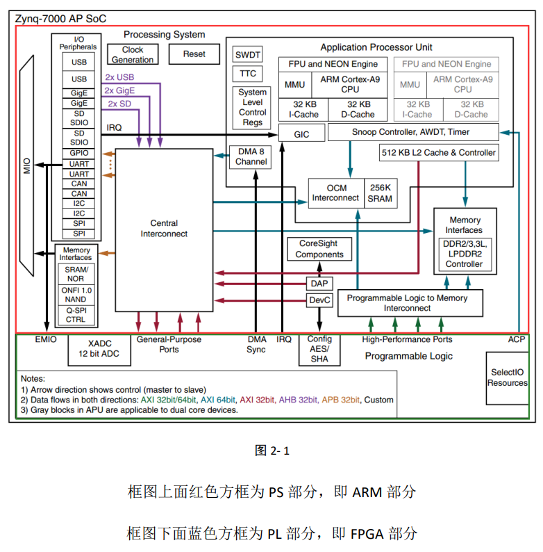
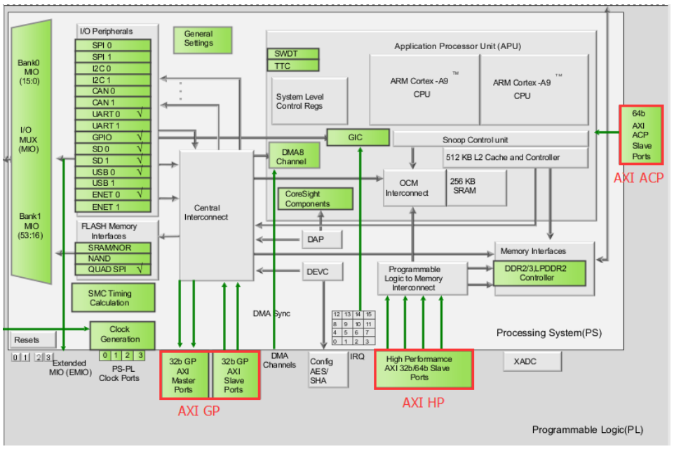
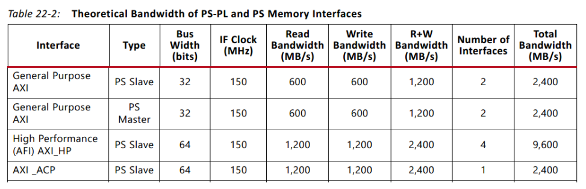

一、ZYNQ 简介
1.1 概述

ZYNQ，即Zynq-7000 All Programmable Soc (APSoC)，赛灵思公司(AMD Xilinx)推出的新一代全可编程片上系统。实际上，ZYNQ = PS(Processing System，处理系统，ARM) + PL(Program Logic，可编程逻辑，实际上就是FPGA)。两个系统可以独立使用，二者通过AXI高速接口进行数据通信。
ZYNQ将处理器的软件可编程性与FPGA的硬件可编程性进行完美结合，以提供无与伦比的系统性能、灵活性和可扩展性。ZYNQ可以依靠片上的ARM内核运行Linux系统。
ZYNQ是基于ARM处理器的SoC，可满足复杂嵌入式系统的高性能、低功耗和多核处理器等要求。SoC(System on Chip)和早期的SoB(System on Board)相对应。SoC的成本更低，能在不同的系统单元之间实现更快更安全的数据传输，具有更高的系统运行速度，更低的功耗，更小的物理尺寸和更高的可靠性。
Soc主要可以分为以下三类： 1. 基于ASIC的Soc； 2. 可编程的片上系统(SOPC, System on Programmable Chip, 即FPGA)：灵活性很高，但是要实现这样的功能要使用的资源很多，导致最后实现的功能受限； 3. 全可编程片上系统(APSoC, All Programmable SoC，即ZYNQ)。 ### 1.2 PL（FPGA）简介
FPGA（Field Programmable Gate Array，现场可编程门阵列），一种可以通过编程来修改其逻辑功能的数字集成电路（芯片）。Xilinx公司对自己的最小可编程单元起名为可配置逻辑块CLB（Configurable Logic Block），一个CLB由两个片（Slice）组成，每个片中包含多个查找表LUT（Look Up Table）和触发器FF（Flip-Flop）。PL部分就是7系列的FPGA部分，型号不同，资源不同，例如逻辑单元，内部存储器数量，乘法器，高速接口等。
FPGA的架构如下所示： - 可编程IO单元：可将引脚配置为上拉或下拉、驱动电流、电平标准、输入、输出或双向等。 - 可编程逻辑单元（CLB） - 底层嵌入功能单元：例如PLL、DSP、时钟管理等 - 嵌入式块RAM（Block RAM）：用来存储数据 - 硬核：例如XADC，不是每一个厂家的每一个芯片都有。XADC可以实现高速AD转换，检测片上温度和电压等。 - 布线资源 - ...
有以下两种PL架构，对应不同的ZYNQ型号 - Artix-Based devices：Z-7010，Z-7015，Z-7020 - Kintex-Based devices：Z-7030，Z-7045，Z-7100
1.3 PS（处理系统）简介
PS端集成了两个ARM Cortex-A9处理器，AMBA（Advanced Microcontroller Bus Architecture）互联，内部存储器，外部存储器接口和多种外设。外设主要包括USB总线接口，I2C总线接口，CAN总线接口，UART接口，GPIO，GigE，以太网接口，SD/SDIO接口等。
在PS端有一部件称为APU（Application Processor Unit），可称为应用处理单元。内部除了两颗ARM核之外还有以下部件需要关注：
- GIC（General Interrupt Controller）：通用中断控制器，用于接收来自外设的IRQ（Interrupt Request，中断请求）。
- OCM（On Chip Memory）：片上存储单元，主要用于管理一块256K的SRAM。
- Memory Interface：PS端内部有两个存储器接口，可以连接和管理芯片外部的存储器芯片，用于实现高速的数据存储、处理和传输。
1.4 ZYNQ GPIO分布
- MIO（Multiplexing IO）：存在于PS端，是可复用的IO。IO管脚的配置在一定程度上保留了灵活性以满足不同外设的需求。
- EMIO（Extensible MIO）：存在于PL端，是对MIO的扩展。如果MIO不够用，这些端口可以直接从PL端扩展到PS端，被PS端直接使用。
ZYNQ有118个GPIO，分为54个MIO和64个EMIO。其中有32个MIO（Bank 0），22个MIO（Bank 1），32个EMIO（Bank 2），32个EMIO（Bank 3）。在概念的分组上，PS端有Bank 0和Bank 1两个分组，PL端有Bank 2和Bank 3两个分组。需要注意这些分组都是概念上的，在硬件上的分组有其他的形式。在硬件上，Bank 500、Bank 501、Bank 502是PS端的分组，Bank 13、Bank 33、Bank 34、Bank 35是PL端的分组。
二、AXI 总线
2.1 概述
AXI（Advanced eXtensible Interface）是一种总线协议，该协议是 ARM 公司提出的 AMBA（Advanced Microcontroller Bus Architecture）3.0 协议中最重要的部分，是一种面向高性能、高带宽、低延迟的片内总线。它的地址/控制和数据相位是分离的，支持不对齐的数据传输，同时在突发传输中，只需要首地址，同时分离的读写数据通道、并支持显著传输访问和乱序访问，并更加容易就行时序收敛。AXI 是 AMBA 中一个新的高性能协议。AXI 技术丰富了现有的 AMBA 标准内容，满足超高性能和复杂的片上系统（SoC）设计的需求。
AXI 总线是连通 PS 和 PL 的一个总线协议，最终的形式就相当于 PL 块作为一个 IP Core 挂载在 AXI 总线上，然后由 PS 调用。Xilinx 从 6 系列的 FPGA 开始对 AXI 总线提供支持，目前使用 AXI4 版本（在A7系列芯片中就可以找到AXI4总线协议）。
2.2 AXI 总线协议种类
- AXI4（For high-performance memory-mapped requirements）：主要面向高性能地址映射通信的需求，是面向地址映射的接口，允许最大256轮的数据突发传输；
- AXI4-Lite（For Simple, low-throughput memory-mapped communication）：是一个轻量级的地址映射单次传输接口，占用的逻辑资源较少；
- AXI4-Stream（For high-speed streaming data）：面向高速数据流传输，去掉了地址传输，允许无限制的数据突发传输规模。
2.3 AXI 总线协议接口

- AXI-GP（General-Purpose，4个通道）：通用AXI接口，包括两个32位主设备接口（用于发送）和两个32位从设备接口（用于接收），通过该接口可以访问PS的片内外设；
- AXI-HP（High-Performance，4个通道）：高性能/带宽的标准的接口，PL模块作为主设备连接，主要用于PL访问PS上的存储器接口，可以访问芯片外部的DDR芯片或片上的OCM（SRAM）；
- AXI-ACP（Accelerator Consistency Port，1个通道）：加速器一致性端口，ARM多核架构下的一种接口，用来管理DMA之类的不带缓存的AXI外设，PS（APU）作从设备用于接收来自PL的数据。

About this Post
This post is written by Yun Zhang, licensed under CC BY-NC 4.0.